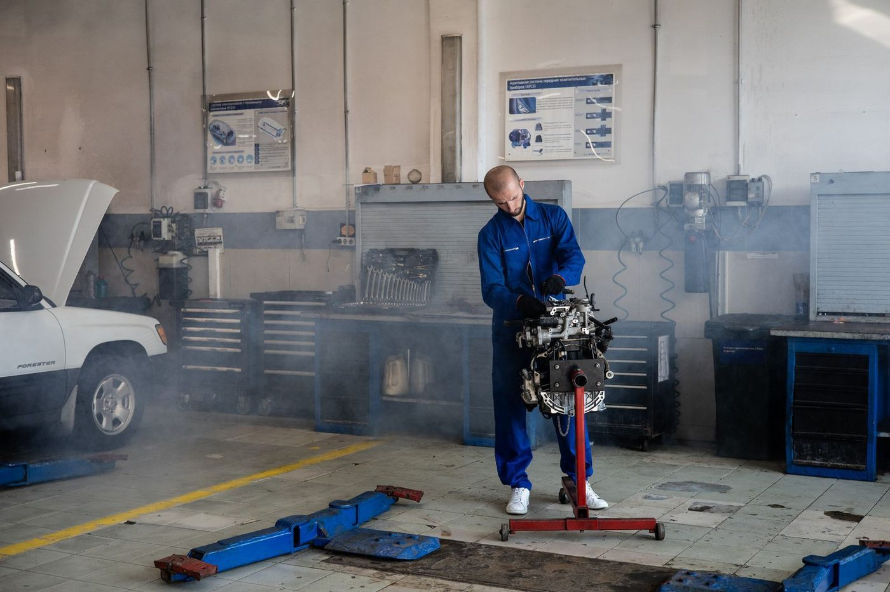
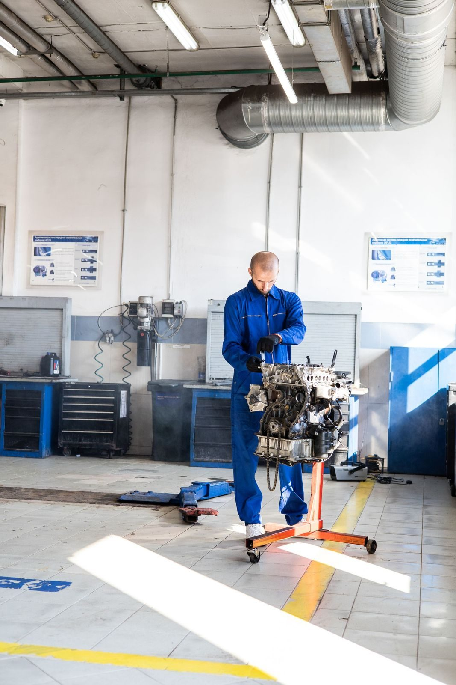

Locally owned since 1969
Auto Air of D'Iberville is a locally owned family business that has worked on vehicle air conditioning and heating since 1969, on all types of vehicles.

Auto Air of D'Iberville is a locally owned family business, working on air conditioning and heating for all types of vehicles since 1969. The shop sits at 4080 Popp's Ferry Rd in D'Iberville.

4080 Popp's Ferry Rd, D'Iberville, MS
Monday to Friday, 8:00 AM to 5:00 PM